Inside a software factory
For engineers who already use Claude Code: what a software factory is, why verification and the three loops matter, and one real request traced through an eleven-stage pipeline on GitLab.
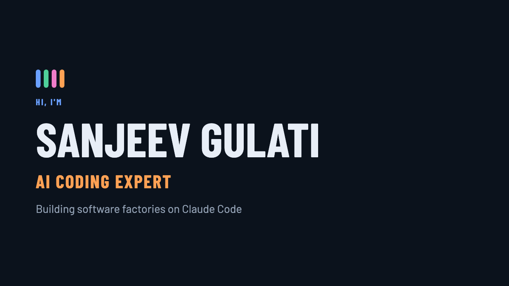
From agents to a factory
Three steps
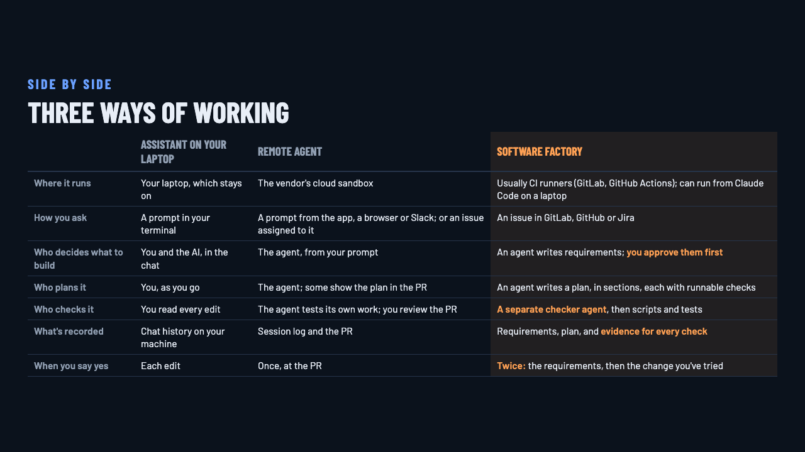
Agents write all the code
A software factory is any agentic system where agents write all of the code you ship. Engineers stop building the product, and build the machine that builds it.
Autonomy first
Verification makes it safe
You can stop reading every line only when something else checks it, every time, and leaves evidence you can inspect. Without that, a factory is a faster way to ship mistakes.
Three loops
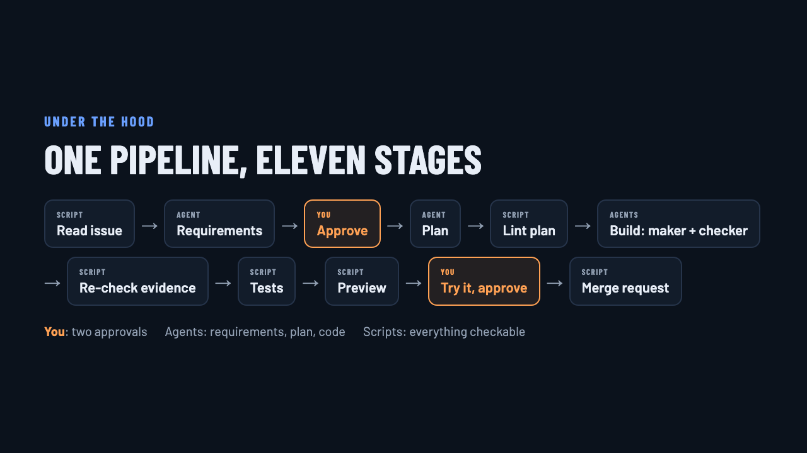
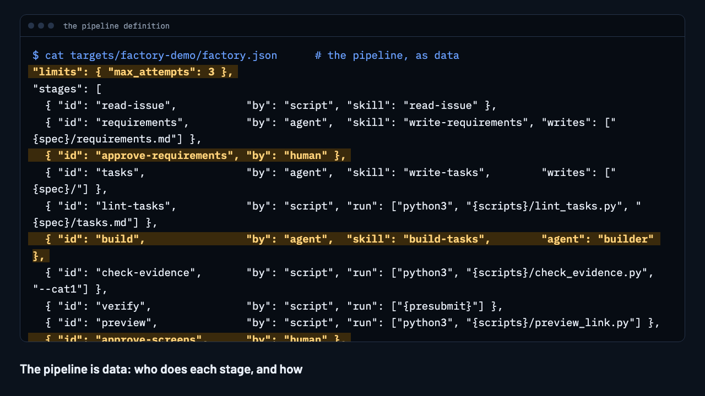

One request, start to finish
A CRM dashboard, asked for in plain words on a GitLab issue.
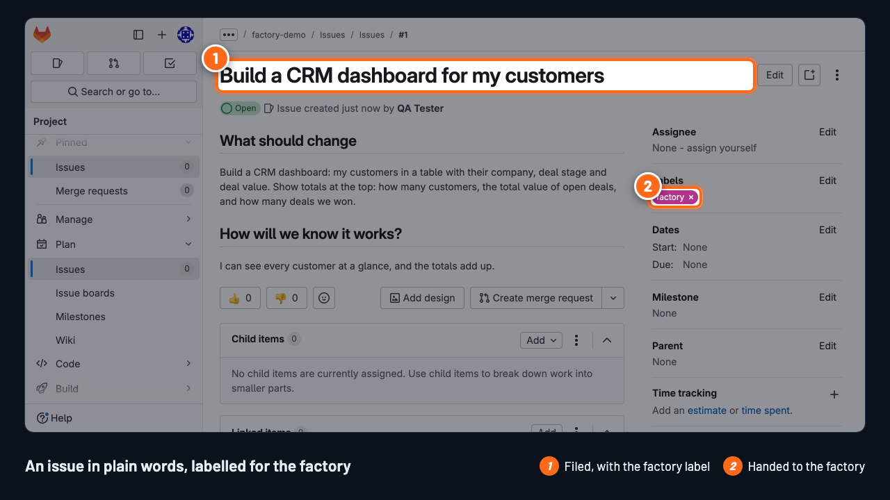

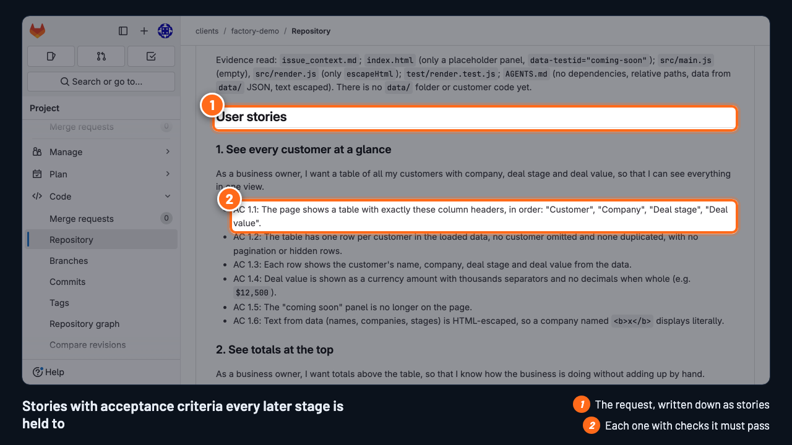
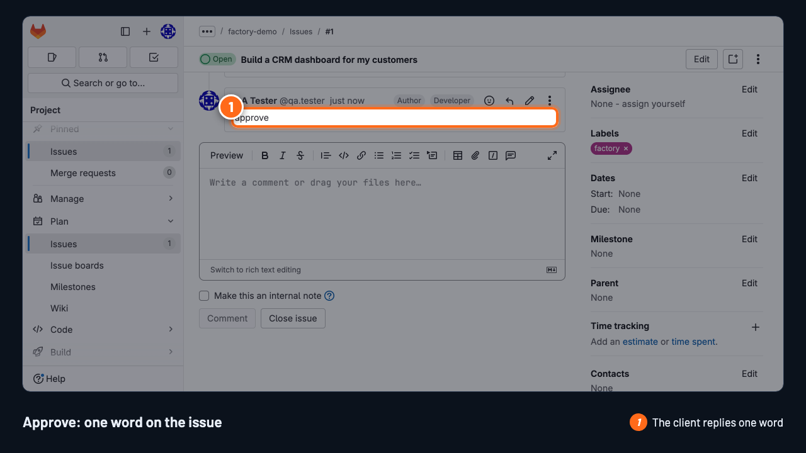
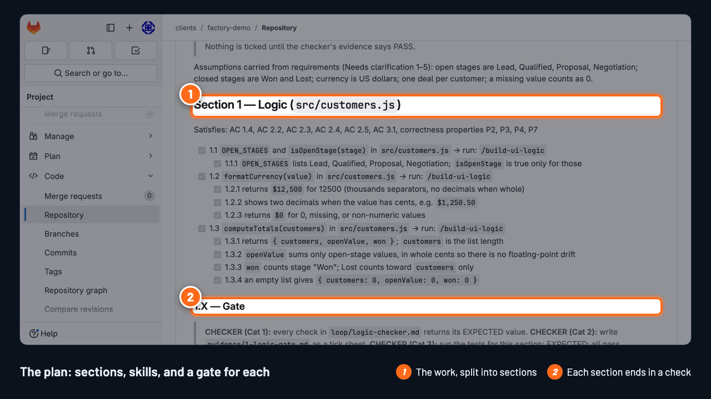
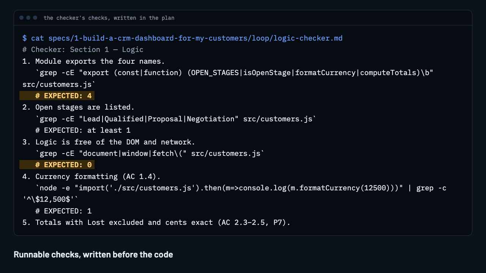
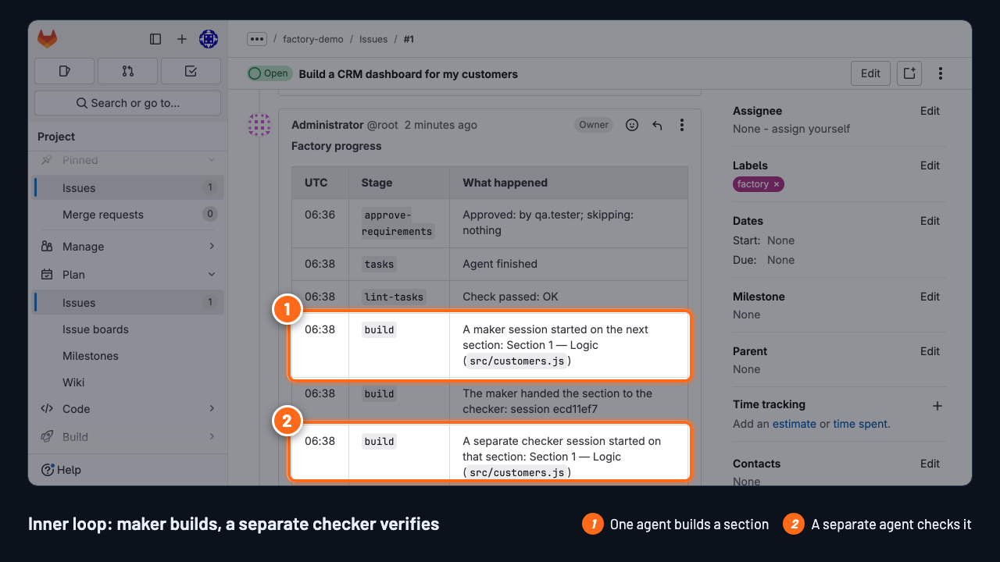
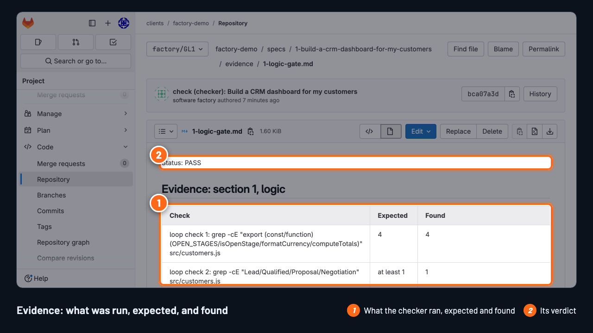
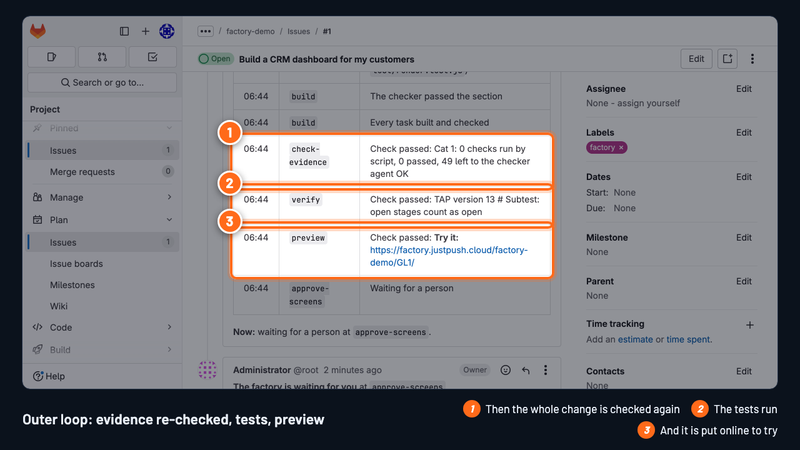


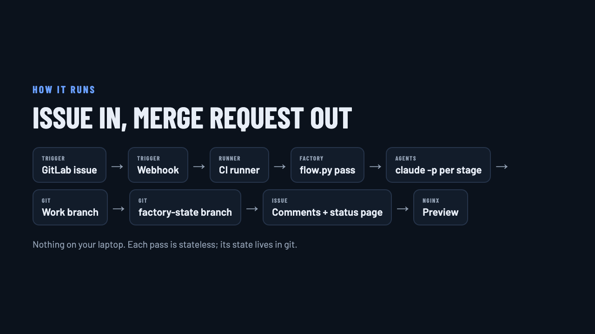
The loops, made concrete
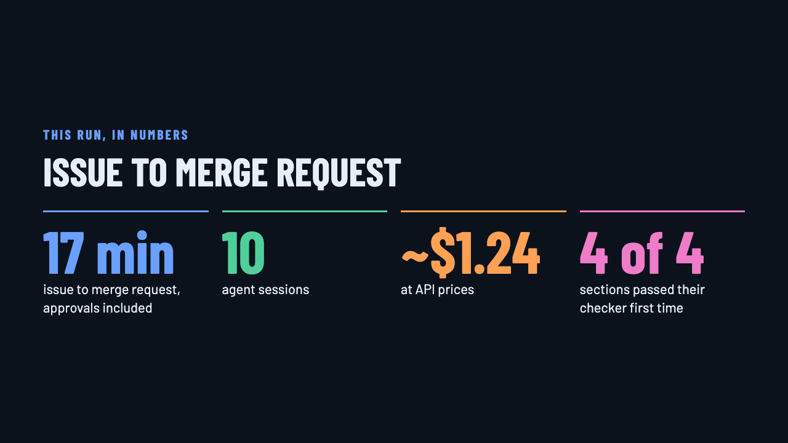
What it doesn't do yet
Get a playground
Your own GitLab project, nothing to install. The code: github.com/sanjeev23oct/software-factory